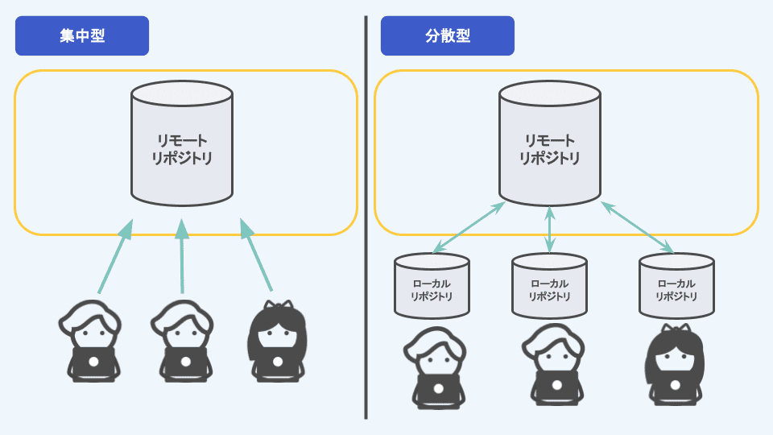
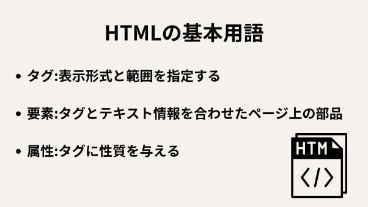
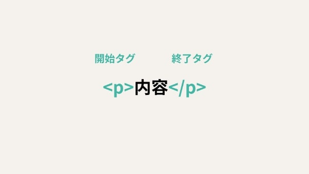
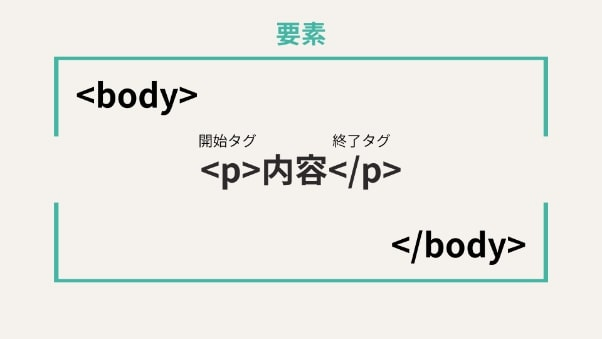

XBP 第一回 演習
gitってなに？
gitとは「分散型バージョン管理システム」のこと

集中型との違い
⇒各PCに「履歴を含む完全なリポジトリ」がある。
gitのメリット
- オフラインでも作業可能。
- 処理が速い
- 安全性が高い
- 柔軟なブランチ運用
- チーム開発に強い
参考文献
(エンベーダー【初心者向け】GitHubとは？必須知識と使い方について解説！)
HTMLってなに？
Webページを作るための「骨組み（構造）」を記述する言語。
正式には HyperText Markup Language（ハイパーテキスト・マークアップ・ランゲージ） という。



「文章の見た目」や「動き」は別の言語（CSS・JavaScript）が担当。
参考文献
(schoo HTMLとは？初心者向けに基礎知識を分かりやすく解説)